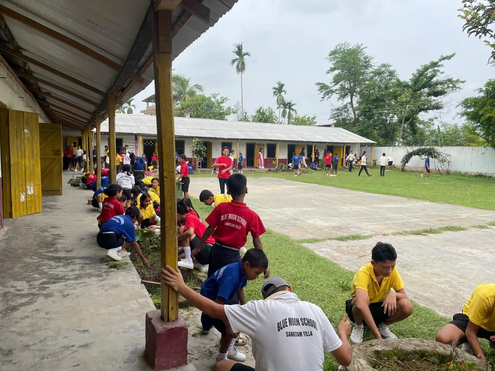
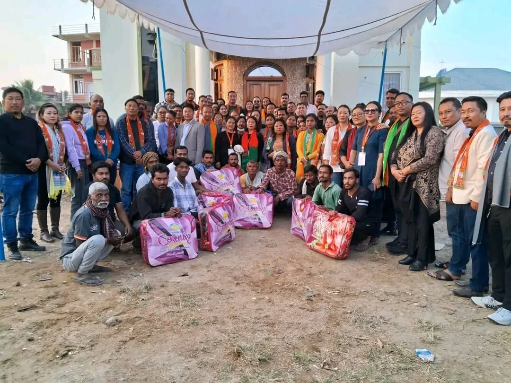
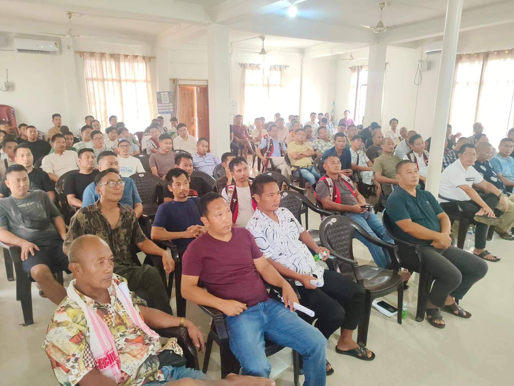
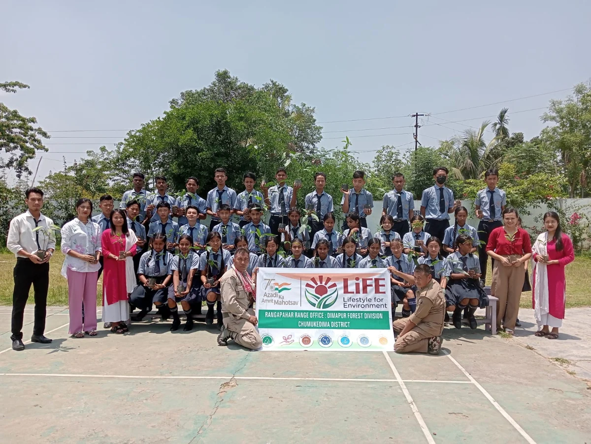
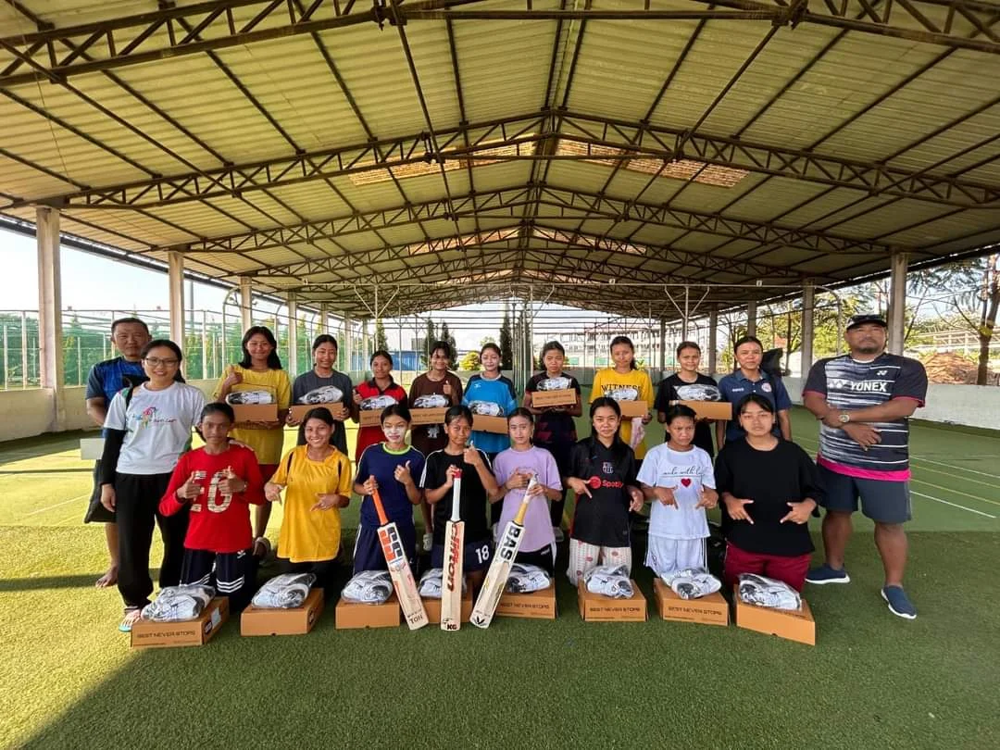
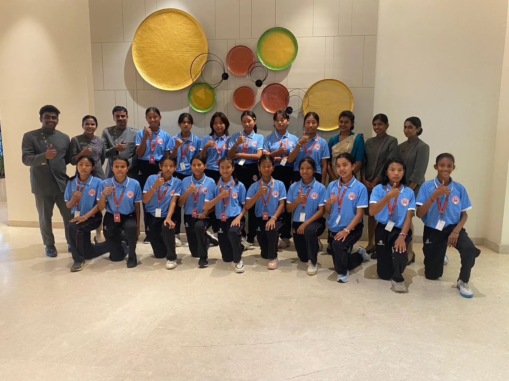
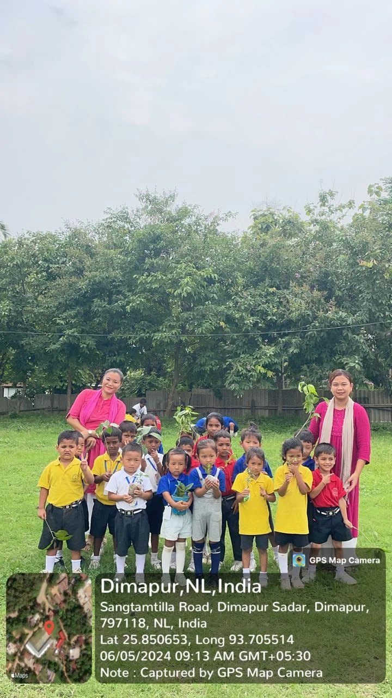
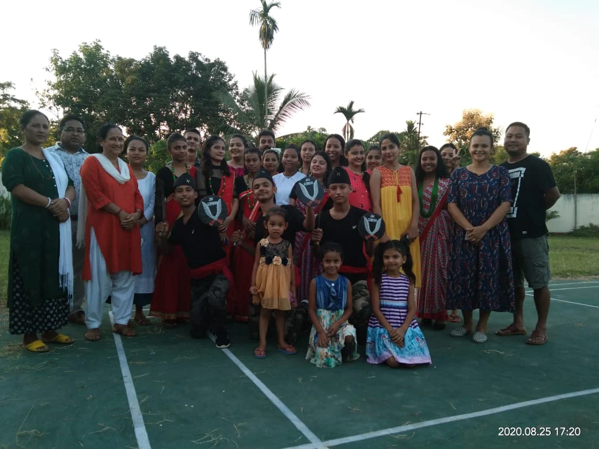
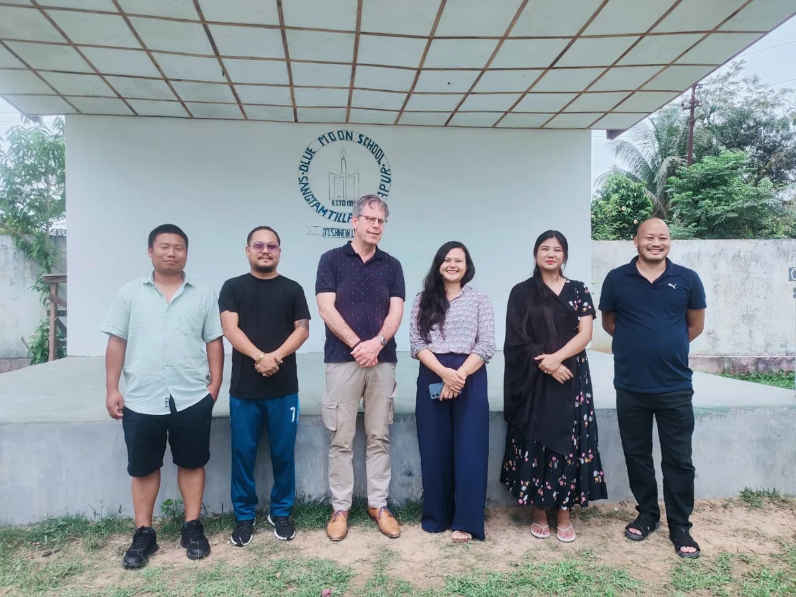

Education
Quality education for marginalised children, with a school in Dimapur adopted by the society in 2020.
ROOTED IN NAGALAND · SINCE 2002
Opening doors to education, wellbeing and opportunity for communities across Nagaland.
Explore our workStronger communities.
More opportunities for everyone.

Small steps. Lasting possibilities.
Sungpu Multipurpose Society
EducationHealthcareLivelihoodsCommunityWHO WE ARE
Everyone deserves access to basic rights and opportunities.
Sungpu Multipurpose Society (SMS) works to make that vision a reality. Since 2002, we have supported communities in Nagaland through education, healthcare, skill development and local initiatives.
Our work centres on children and young people from marginalised communities, women and girls, persons with disabilities, and senior citizens.
Read our society profileOUR FOCUS
Practical support, shaped by the needs
of the people we serve.
Quality education for marginalised children, with a school in Dimapur adopted by the society in 2020.
Better access to care for vulnerable communities, including mobile health campaigns for senior citizens in Kangtsung village.
A focus on livelihoods and agriculture, with a vision to bring skill development training to remote areas of Nagaland.
Supporting local talent in music, art and culture, alongside training for women in cricket, athletics and dance.
COMMUNITY IN ACTION

CARE & SOLIDARITY
From distributing basic necessities during COVID-19 in 2020 to organising community initiatives, our work begins with people.

PARTICIPATION & PROGRESS
Local gatherings, sports and cultural programmes create space for participation, connection and shared progress.






MORE WAYS WE SERVE
GET IN TOUCH
Connect with us to learn more about the society and our work.
Kangtsung village, P.O. Tuli
Mokokchung District, Nagaland – 798618
Signal Angami village
Dimapur, Nagaland – 797112